Welcome to EDE
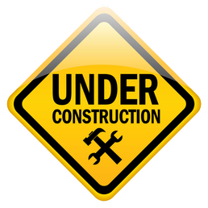
EDE is an abbreviation of "Enhanced Desktop Experience". It is an application to give you a better experience with your windows within a multi-monitor environment.
General Concept
EDE consists of a GUI whose functionality can be easily accessed via hotkeys. It is designed for usage via keyboard - the main purpose of the GUI is to offer a visual reference card to the single offered commands. Unless you can also access functionality via GUI, EDE is designed to access functionality is via hotkeys
The most important keys for accessing EDE are the left Windows key and the NUMPAD-Keys.
The GUI is opened via key-combination Left-WIN + Numpad-1 (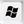 + 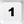). To hide the GUI press 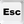. If you perform no further action, EDE-Gui will disappear automatically after a timeout (which can be configured).
The GUI consists of two sections of buttons which do have different functionality:
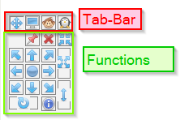
Functions
The functions provide the actions you want to perform with EDE (for example: moving the currently active window to the lower left corner of the screen). Each TAB offers a different set of functions.
The functions panel is organized as the keys on the numerical keypad of your keyboard:
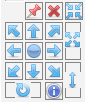 <-> 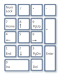
Each function can be accessed by pressing the corresponding key on the numerical keypad (if EDE is activated). If EDE is activated, functions can also be selected via mouseclick. Mouse-Hovering over the function-buttons on the EDE-GUI will show a tooltip, offering short help.
TAB-Bar
The Tab-Bar is used to switch between several sets of functions. EDE currently offers 4 TABS.
When EDE is activated, it opens on the given TAB: pressing Left-WIN () followed by a number from 1 to 4 (as there are 4 TABS) on the numerical keypad will open/activate EDE on the given TAB. Subsequently pressing a key on the NUMPAD will call the chosen function and perform the associated action.
Summary
So if you want to move the active window to the lower left corner of the monitor, you have to activate EDE and press the corresponding NUMPAD key to perform this action.
The key-sequence to perform the action above looks like + - (the meaning of + and - chars are described below in chapter Conventions)
To hide the GUI press .
Conventions
Within this documentation, the following convention/symbols are used:
- is meant to be LEFT-WIN key
 , , 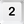, 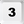, 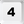, 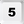, 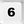, 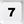, 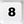, 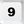, 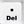, 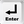, 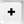, , 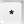, 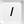 are meant to be the corressponding keys on the numerical keyboard
, , 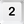, 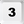, 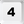, 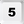, 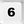, 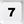, 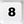, 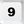, 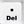, 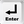, 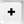, , 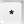, 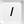 are meant to be the corressponding keys on the numerical keyboard- Within key-sequences plus (+) and minus (-) chars are used to indicate different actions on the keys. Whilst + (plus) means to keep to previous key(s) pressed when pressing the next key, - (minus) means that the previously pressed key(s) have to be released before pressing the next key. For example the key-sequence + - should be read as: press LEFT-WIN and then NUMPAD-1 without relasing LEFT-WIN (+ char), release these keys (- char) before pressing the (second) NUMPAD-1
This site is build using mkdocs.